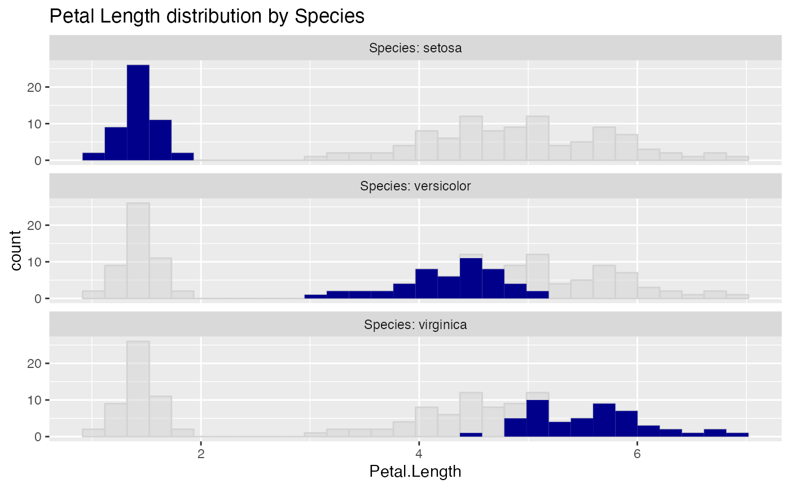

Plot a histogram of a continuous variable xvar,
faceted on a categorical conditioning variable, condvar. Each faceted plot
also shows a "shadow plot" of the unconditioned histogram for comparison.
ShadowHist( frm, xvar, condvar, title, ..., ncol = 1, monochrome = FALSE, palette = "Dark2", fillcolor = "darkblue", bins = 30, binwidth = NULL )
Arguments
| frm | data frame to get values from. |
|---|---|
| xvar | name of the primary continuous variable |
| condvar | name of conditioning variable (categorical variable, controls faceting). |
| title | title to place on plot. |
| ... | no unnamed argument, added to force named binding of later arguments. |
| ncol | numeric: number of columns in facet_wrap. |
| monochrome | logical: if TRUE, all facets filled with same color |
| palette | character: if monochrome==FALSE, name of brewer color palette (can be NULL) |
| fillcolor | character: if monochrome==TRUE, name of fill color |
| bins | number of bins. Defaults to thirty. |
| binwidth | width of the bins. Overrides bins. |
Value
a ggplot2 histogram plot
Details
Currently supports only the bins and binwidth arguments (see geom_histogram),
but not the center, boundary, or breaks arguments.
By default, the facet plots are arranged in a single column. This can be changed
with the optional ncol argument.
If palette is NULL, and monochrome is FALSE, plot colors will be chosen from the default ggplot2 palette. Setting palette to NULL
allows the user to choose a non-Brewer palette, for example with scale_fill_manual.
For consistency with previous releases, ShadowHist defaults to monochrome = FALSE, while
ShadowPlot defaults to monochrome = TRUE.
Please see here for some interesting discussion https://drsimonj.svbtle.com/plotting-background-data-for-groups-with-ggplot2.
Examples
ShadowHist(iris, "Petal.Length", "Species", title = "Petal Length distribution by Species")# make all the facets the same color ShadowHist(iris, "Petal.Length", "Species", monochrome=TRUE, title = "Petal Length distribution by Species")